Name: Math 241: Calculus & Analytic Geometry A
Exam 3 Solution Guide
November 27 2002
Were it not for Occam's Razor, which always demands simplicity, I'd be
tempted to believe that human beings are more influenced by distant causes
than immediate ones. This would be especially true of overeducated people,
who are capable of thinking past the immediate and becoming obsessed by the
remote.
- from ``Straight Man'' by Richard Russo
Instructions: Show all work to receive full or partial credit. All University rules and guidelines for student conduct are applicable.
Beneath each problem is percentage of students who earned 80% or more of the points for that question.

Section 016: 80% Section 017: 92.3% Section 018: 80% All sections: 84.2%
Simplify and divide the numerator and denominator by 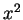
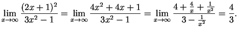

Section 016: 32% Section 017: 69.2% Section 018: 44% All sections: 48.7%
The rational function is already factored, so it is simply a matter of
examining the function. The roots (intercepts) are at 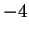 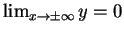 -intercept because
-intercept because  is an asymptote as is
is an asymptote as is  .
We also see that
.
We also see that
 on each side of the asymptotes, one can
build the following qualitative sketch.
on each side of the asymptotes, one can
build the following qualitative sketch.
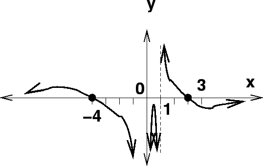
Section 016: 80% Section 017: 100% Section 018: 88% All sections: 89.5%
This is a direct application of the definite integral:
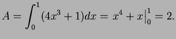
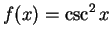
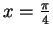
and
Section 016: 44% Section 017: 92.3% Section 018: 52% All sections: 63.2%
Again, this is a direct application of the definite integral, but this time it has a more complicated integrand:
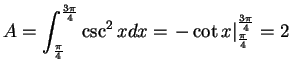
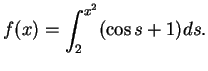
Section 016: 56% Section 017: 73.1% Section 018: 72% All sections: 67.1%
This is a direct application of the Fundamental Theorem of Calculus (version 1). In this case, we must apply the chain rule on the upper limit of integration.
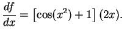
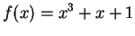
Section 016: 80% Section 017: 96.2% Section 018: 96% All sections: 90.8%
We recall that the basic algorithm for Newton's method is
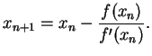
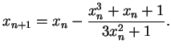
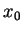 |
0 | ||
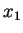 |
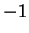 |
||
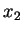 |
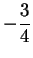 |

Section 016: 60% Section 017: 80.8% Section 018: 84% All sections: 75%
Of course, we want to maximize the volume defined to be
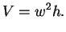
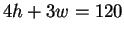
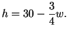
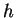
into our equation for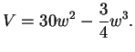
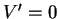
so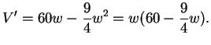
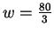
and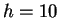
. Using these values, we see that the greatest possible volume is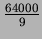
cubic inches.